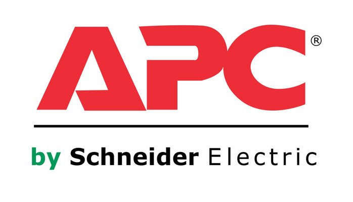

- Egresado de Codeable, 2do Cohort
- Software Engineer en Able.
- 6 años de experiencia con Elixir
- Side-Projects y trabajos freelancer.
- I love elixir ❤️
Me
Me
Contenido
Contenido
- Introducción
- Porque fue creado?
- Projectos interesantes
- Compañias usandolo
- Workshop
- Pattern Matching
- Functiones
Pipe operator ❤️Special Formscasewithfor
Porque fue creado?
Porque fue creado?
Hasta que un joven programador, parte de la core team de Ruby on Rails, aparecio.
Jose Valim
Jose Valim

se encontro con un libro
se encontro con un libro

Companies that are using Erlang
Companies that are using Erlang

Proceso de creación (2011)
Proceso de creación (2011)

Ruby -> Elixir (Developer Joy)
Ruby -> Elixir (Developer Joy)

Erlang -> Elixir (Runtime and 40 years of libraries)
Erlang -> Elixir (Runtime and 40 years of libraries)

Clojure -> Elixir (Metaprogramación)
Clojure -> Elixir (Metaprogramación)

Elixir is what would happen if Erlang, Clojure, and Ruby somehow had a baby and it wasn’t an accident.
–Devin Torres
Proyectos interesantes
Proyectos interesantes
LiveView Aproarch
LiveView Aproarch
Machine Learning
Machine Learning
Some Companies using Elixir
Some Companies using Elixir


- 200 servidores python a solo 4 con Elixir.
- 30 instancias c32.xl con Java a solo 15 con Elixir.

Workshop
Workshop
Pattern Matching
Pattern Matching
Pattern Matching
Pattern Matching

patron = data
patron = data
Pattern Matching
Pattern Matching
2 partes:
- Data: Expresion evaluada contra la cual se hara una comparación.
- Patron: Forma de data. -Contiene variables.
Pattern Matching
Pattern Matching
Elixir tratará de asignar valores a las variables para que la comparación sea verdadera.
- La asignación de variables es una posible consecuencia de pattern matching.
Pattern Matching
Pattern Matching
iex> nombre = "Albert" "Albert" iex> apodo = "amiguito" "amiguito"
Pattern Matching
Pattern Matching
Las variables pueden reasignarse.
Ejemplo:
iex> nombre = "Albert" "Albert" iex> nombre = "Amiguito" "Amiguito"
Pattern Matching
Pattern Matching
Patrones complejos y multipartes puede ser usadas
Ejemplo:
iex> {nombre, apodo} = {"Albert", "amiguito"}
{"Albert", "amiguito"}
iex> nombre
"Albert"
iex> apodo
"amiguito"
Pattern Matching
Pattern Matching
Variables solo pueden enlazar una vez por match.
Ejemplo:
#Contrajemplo
iex> {edad, edad} = {35, 15}
(MatchError) no match of right hand side value: {35, 15}
Pattern Matching
Pattern Matching
Usamos _ para ignorar elementos en el patron.
Ejemplo:
iex> {nombre, _} = {"Albert", "Amiguito"}
{"Albert", "Amiguito"}
iex> nombre
"Albert"
#Tambien puedo usar la siguiente forma solo por un tema de documentación
iex> {nombre, _apodo} = {"Albert", "Amiguito"}
{"Albert", "Amiguito"}
iex> edad
warning: ...........
Pattern Matching
Pattern Matching
En el patron podemos incluir informacion.
Ejemplo:
iex> {"Albert", apodo} = {"Albert", "Amiguito"}
{"Albert", "Amiguito"}
iex> apodo
"Amiguito"
iex> {"Amiguito", apodo} = {"Albert", "Amiguito"}
(MatchError) no match of right hand side value:
Operador Match
Operador Match
Usamos ^ cuando queremos usar el valor de las variables pero en el lado del patron.
Ejemplo:
iex> nombre = "Albert"
"Albert"
iex> {^nombre, ciudad} = {"Albert", "Huaraz"}
{"Albert", "Huaraz"}
iex> ciudad
"Huaraz"
Operador Match
Operador Match
Todos los Tipos de datos en Elixir pueden ser matcheados.
Ejemplo:
#Mapas
iex> %{nombre: nombre, ciudad: ciudad} = %{nombre: "Albert", ciudad: "Huaraz"}
#Estructuras
iex> %Persona{} = %Persona{nombre: "Albert", ciudad: "Huaraz"}
{"Albert", "Huaraz"}
#Binarios
iex> "Hola " <> palabra = "Hola Mundo"
"Hola Mundo"
iex> palabra
mundo
😲
😲
iex> [a,_,_,_, %{value: a}] = [1, 2, 3, 4, %{value: 1}]
iex> [a,_,_,_, %{value: a}] = [1, 2, 3, 4, %{value: 2}]
Funciones
Funciones
Funciones
Funciones

Funciones anonimas
Funciones anonimas
Funciones anonimas
Funciones anonimas
#fn(<parametro1>, <parametro2>, ....) -> <ejecucion y retorno> end iex> velocidad = fn (altura) -> :math.sqrt(2 * 9.81 * altura) end #Function<6.52032458/1 in :erl_eval.expr/5> iex> velocidad.(3) 7.672027111526653 iex> sum = fn (a, b) -> a + b end #Function<12.17052888 in :erl_eval.expr/5> iex> sum.(1, 2) 3
Funciones anonimas y pattern matching
Funciones anonimas y pattern matching
iex> velocidad = fn
...> (altura) when is_number(altura) -> :math.sqrt(2 * 9.81 * altura)
...> (_) -> "Qué paso amiguito?"
...> end
#Function<6.52032458/1 in :erl_eval.expr/5>
iex> velocidad(3)
7.672027111526653
iex> velocidad.("Holi")
"Qué paso amiguito?"
Otro Ejemplo
Otro Ejemplo
handle_open = fn
{:ok, file} -> "Read data: #{IO.read(file, :line)}"
{_, error} -> "Error: #{:file.format_error(error)}"
end
handle_open.(File.open("albert.livemd"))
handle_open.(File.open("nonexistent"))
Shortcut &
Shortcut &
iex> cociente_residuo = &{ div(&1,&2), rem(&1,&2) }
iex> cociente_residuo.(13, 5)
{2, 3}
iex> lista = &[&1, &1 * 2, &1 * 3]
iex> lista.(5)
[5, 10, 15]
Funciones con nombre
Funciones con nombre
Funciones con nombre
Funciones con nombre
defmodule Caida do
def velocidad(altura) do
:math.sqrt(2 * 9.81 * altura)
end
end
Funciones con nombre y pattern matching
Funciones con nombre y pattern matching
defmodule Factorial do def de(0), do: 1 def de(n) when is_number(n), do: n * de(n-1) def de(_), do: "Que paso amiguito?" end
Inmutabilidad
Inmutabilidad
En el paradigma funcional, la inmutabilidad consiste en la incapacidad de reasignar variables.
En Elixir, es posible reasignar variables. Pero para Elixir, inmutabilidad significa que las funciones no pueden modificar a sus parametros.
En Elixir no existe el concepto de referencia de variables.
Inmutabilidad
Inmutabilidad
iex> nombre = "Albert"
iex> nombre = "Elixir Mexico"
iex> mapa = %{nombre: "Albert", location: "Peru"}
iex> Map.put(mapa, :location, "Mexico")
%{nombre: "Albert", location: "Mexico"}
iex> mapa
%{nombre: "Albert", location: "Peru"}
Pureza
Pureza
When we can’t predict the results of a function, the function is impure. – O'Reilly
Elixir tiene funciones impuras, porque estas son capaces de comunicarse con archivos, pseudorandom code (Side Effect)
Pipe Operator
Pipe Operator
Pipe Operator |>
Pipe Operator |>

Pipe Operator |>
Pipe Operator |>

Pipe Operator |>
Pipe Operator |>
Diseñado para resolver este problema (basado en pipeline de unix):
lista = 1..500000 temp = Enum.map(lista, &(&1*2-20)) respuesta = Enum.filter(temp, &(rem(&1, 3) == 0 || rem(&1, 5) == 0)) respuesta = Enum.take(temp, 5) Enum.take(Enum.filter(Enum.map(1..500000, &(&1*2-20)), &(rem(&1, 3) == 0 || rem(&1, 5) == 0)), 5)
Pipe Operator |>
Pipe Operator |>
Podemos usar algo más elegante y eficiente
1..500000 |> Enum.map(&(&1*2-20)) |> Enum.filter(&(rem(&1, 3) == 0 || rem(&1, 5) == 0)) |> Enum.take(5)
Special Forms
Special Forms
case, with, for
case
case
Es una forma especial que se utiliza para aprovechar pattern matching sin crear nuevas funciones.
def delete_user(_, _, %{context: %{current_user: user}}) do
case Accounts.delete_user(user) do
{:ok, user} ->
{:ok, user}
{:error, changeset} ->
{:error,
message: "Could not delete user",
details: ChangesetErrors.error_details(changeset)}
end
end
with
with
Es una forma especial que se utiliza para encadenar/combinar operaciones pattern matching que se comportan como requisitos para ejecutar una accion especifica.
Si una de estas operaciones falla, la cadena se aborta y se devuelve el ultimo valor no coincidente.
with
with
iex> opts = %{width: 10}
iex> with {:ok, width} <- Map.fetch(opts, :width),
iex> {:ok, height} <- Map.fetch(opts, :height)
iex> do
iex> {:ok, width * height}
iex> end
:error
with
with
def update_current_recruiter(_, args, %{context: %{current_user: user}}) do
with recruiter <- Accounts.get_recruiter_from_user(user),
params <- Enum.into(args, %{}),
{:ok, recruiter} <- Recruitment.update_recruiter(recruiter, params)
do
{:ok, recruiter}
else
nil ->
{:error,
message: "Current user is not a recruiter",
details: %{amiguito: "amiguito"}}
{:error, changeset} ->
{:error,
message: "Could not update recruiter",
details: ChangesetErrors.error_details(changeset)}
end
end
for (comprehension)
for (comprehension)
Es una forma especial que se utiliza como generador de combinaciones.
iex> one = [1,2,3] iex> two = [4,5,6] iex> for a <- one, b <- two, do: [a, b] iex> divisible_by_5? = &(rem(&1, 5) == 0) iex> for n <- 1..100, divisible_by_5?.(n), do: n
for (comprehension)
for (comprehension)
defmodule Strain do
def keep([head | tail], fun) do
case fun.(head) do
true -> [head | keep(tail, fun)]
false -> keep(tail, fun)
end
end
def keep([], _fun), do: []
def discard(list, fun), do: keep(list, &(!fun.(&1)))
end
for (comprehension)
for (comprehension)
defmodule Strain do def keep(list, fun), do: for x <- list, fun.(x), do: x def discard(list, fun), do: for x <- list, !fun.(x), do: x end
Thank You ʕ•ᴥ•ʔ